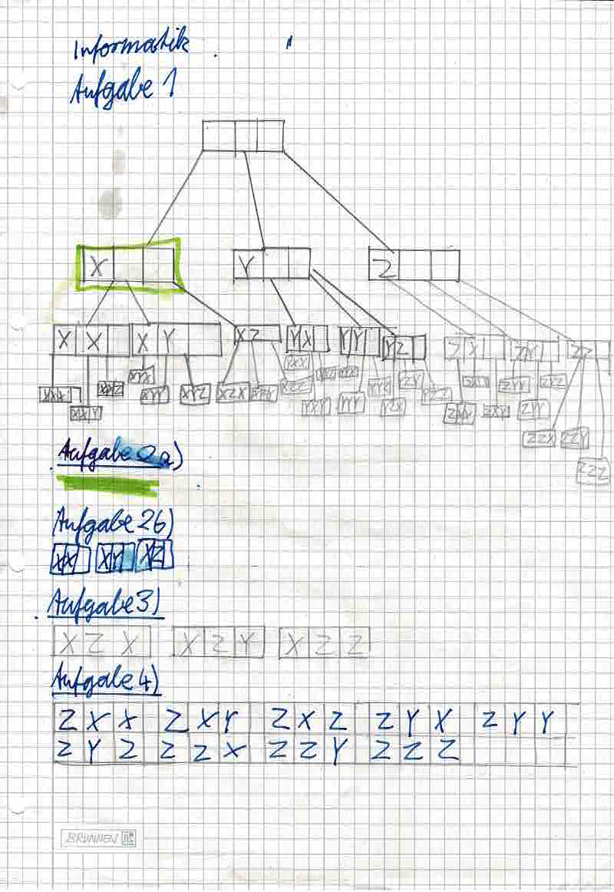
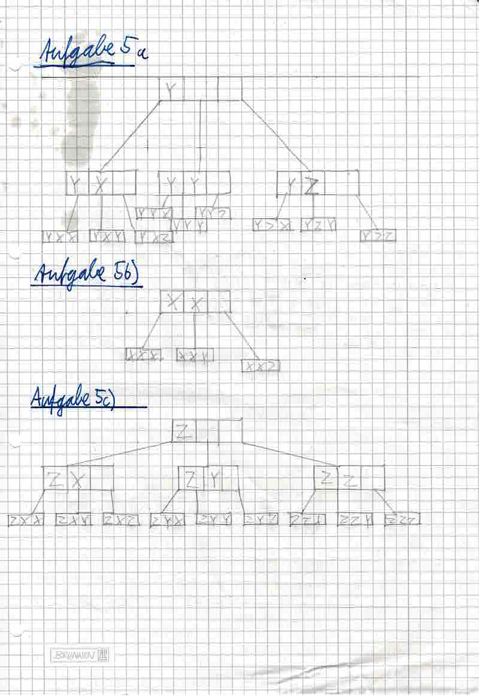
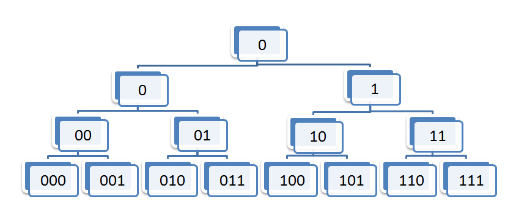
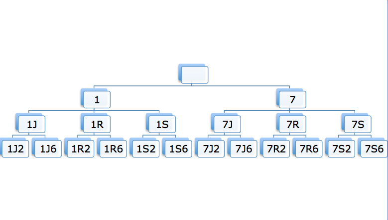
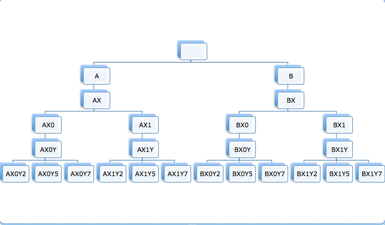

Dies sind die Aufgaben von Aussenstelle.
Aufgabe 1 - 5:

Abbilung 1: Arbeitsblatt mit meinen Lösungen zu den Aufgaben 1 - 4

Abbilung 2: Arbeitsblatt mit meinen Lösungen zu den Aufgaben 4 und 5
Aufgrund der glorreichen Idee meines Bruders, der eine Flasche Öl auf die Blätter gestellt hat sind leider Ölflecken auf dem Blatt.
Die restlichen Aufgaben folgen.
Aufgabe 6: Liste Alle Wörter der Länge 3 über dem Alphabet {0, 1} auf, indem du ähnlich wie in Aufgabe 1 einen Baum zeichnest, dessen Blätter alle gesuchten Wörter beinhaltet. Löse die Aufgabe an einem Computer.

Abbilung 3: Das Gesuchte Baumdiagramm aus Aufgabe 6
Aufgabe 7: Liste Alle mittels eines Baumes alle Wörter der Länge 2 über dem Alphabet {A, B, C, D} auf. Bearbeite diese Aufgabe an einem Computer.
Abbilung 4: Das Gesuchte Baumdiagramm aus Aufgabe 7
Aufgabe 8: Zeichne einen Baum der in seinen Blättern alle Wörter der Länge 3 mit folgenden Eigenschaften enthält: Das erste Symbol ist 1 oder 7, das zweite Symbol ist J, R oder S und das 3. Symbol ist 2 oder 6

Abbilung 5: Das Gesuchte Baumdiagramm aus Aufgabe 8
Aufgabe 9: Zeichne einen Baum der in seinen Blättern alle Wörter der Länge 5 mit folgenden Eigenschaften enthält: Das erste Symbol ist A oder B, das zweite Symbol ist X, das dritte Symbol ist 0 oder 1, das vierte Symbol muss Y sein und das fünfte Symbol ist 2, 5 oder 7. Zähle zum Schluss alle Blätter.

Abbilung 6: Das Gesuchte Baumdiagramm aus Aufgabe 8
Es sind 25 Blätter
Aufgabe 10: Stelle dir vor du bist Aufgefordert alle Wórter der Länge 1, 2 und 3...
Das Auflisten von allen Wörtern der Länge 3 ist bei einem Alphabet der Länge 3 noch nicht wirklich schwierig, da das Alphabet nicht wirklich groß ist. Wenn man dies mit einem Römischen Alphabet (26 Buchstaben) gibt es viel mehr Möglichkeiten (Alle Wörter der Länge 3 auf dem Römischen Alphabet (26 Buchstaben) = (Alphabetgröße) (Länge der Wörter) = 263 = 17576 Wörter. Von dem ersten Knoten gehen schon 26 Blätter aus. Das ist ganz schön viel Arbeit. Aus diesem Grund halte ich es für ungeeignet.
Created with HTML